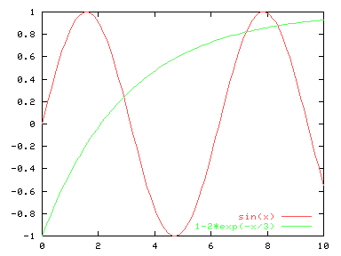
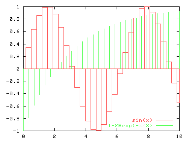

| Herramientas en GNU/Linux para estudiantes universitarios: | ||
|---|---|---|
| Anterior | Capítulo 9. Usos avanzados. Truquillos de gurú | Siguiente |
Para obtener un dibujo con varias graficas en el basta con poner las distintas funciones que se quieren representar separadas por comas, en el mismo comando "plot".
plot [0:10] sin(x), 1-2*exp(-x/3)

También se puede usar el comando "replot" para añadir funciones o datos a la representación. "replot" añade las nuevas funciones a las que ya se habían representado antes, y las muestra todas juntas. La sintaxis es semejante a la de "plot".
set samples 30
plot [0:10] sin(x) with boxes
replot 1-2*exp(-x/3) with impulses

En este caso además hemos añadido dos nuevos atributos del comando "plot", con lo que conseguimos un reslutado más vistoso.
Se pueden superponer tantas gráficas como se deseen. También es posible con gráficos 3D, y en coordenadas polares, cilíndricas y esféricas, aunque no es posible mezclarlas.